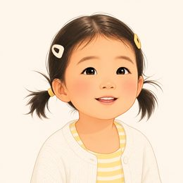

跟着念念学英语
Learn English with Niannian
选一本小书，点开来读一读。
给家长：怎么和孩子一起读？
一本一个小主题
每本书有 10 页，每页一个简单词或句子。孩子可以今天只读一本，下次再读另一本。
读完一本，书脊上会留下“★ 读过啦”（只保存在当前这台设备的浏览器里）。
怎么读
先指图，再听英文，再做一个动作。她指一指、回答中文，也是在参与；不必要求跟读。
所有音频已经放进这个文件，播放时不用联网。如果没有声音，请检查设备音量，或用 Safari、Chrome、Edge 打开。
给家长：这一页怎么玩？
这一页
先指图，再听英文，再做一个动作。她指一指、回答中文，也是在参与；不必要求跟读。
选一个喜欢的声音
默认是可爱的英语童声，也可以换成亲切女声。正常和慢速都有独立音频，已放进绘本文件。
键盘：左右方向键翻页，空格播放或停止，Esc 回书架。